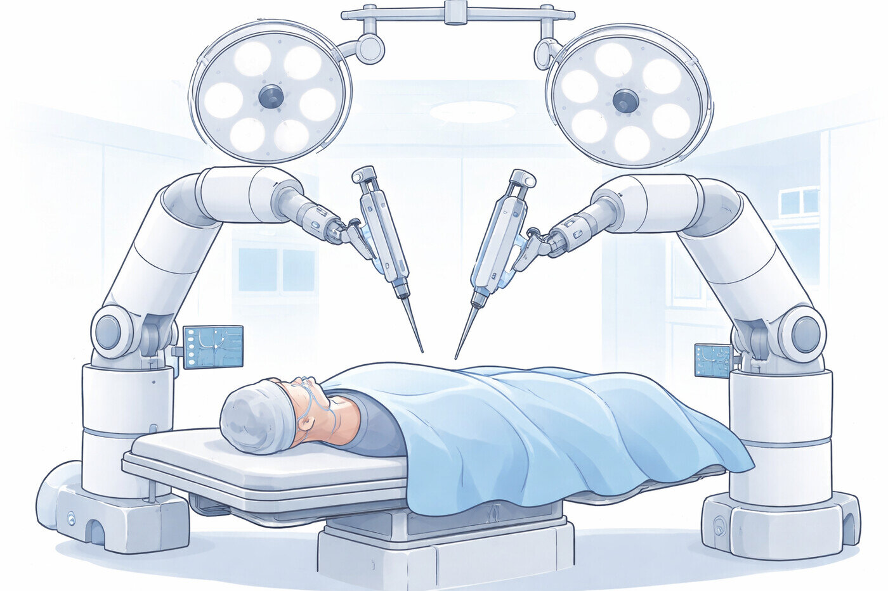
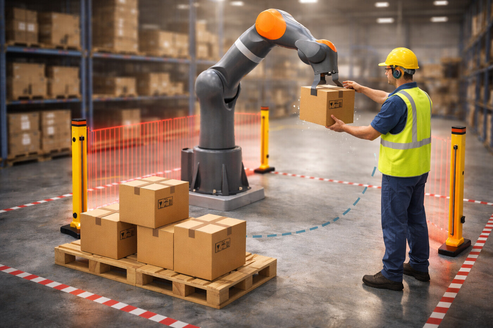
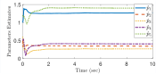
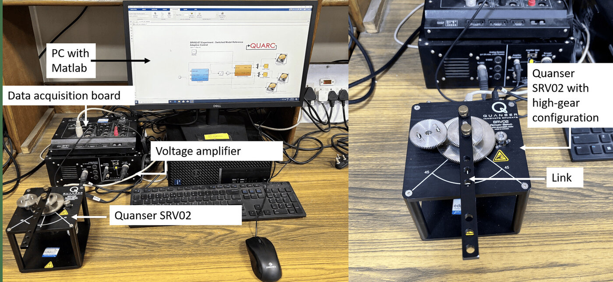
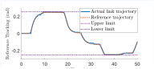
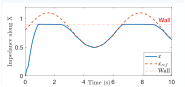
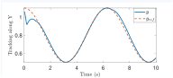
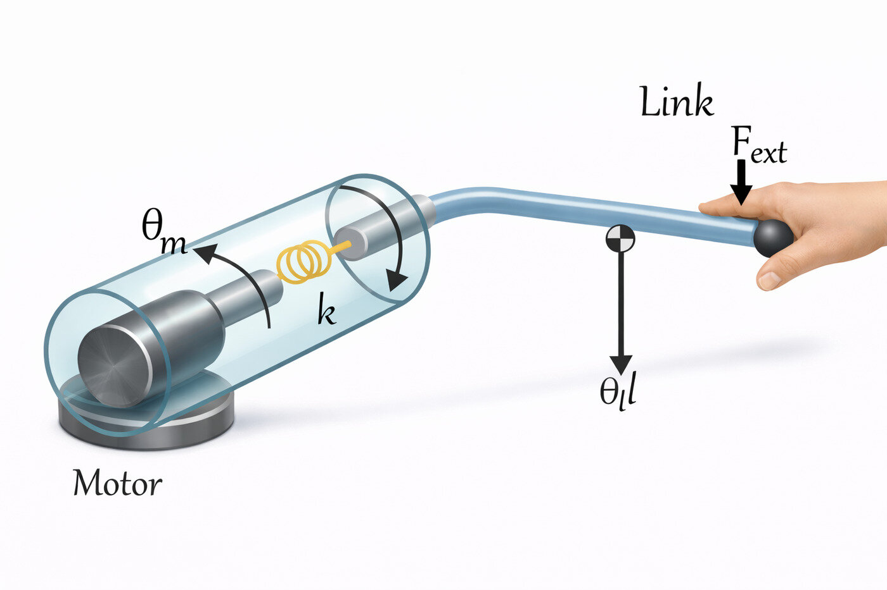
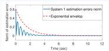
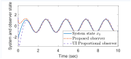

How can a robot yield to people and to uncertain environments while provably never violating safety — with limited model knowledge and explicit time guarantees?
Identify unknown parameters in fixed time, from initial rather than persistent excitation.
Certificate: explicit settling-time bound $\mathcal{T}_{\max}$
Never leave the safe set — even while yielding to the human.
Certificate: forward invariance; recursive feasibility
Reconstruct unmeasured states, treating the human force as an unknown input.
Certificate: contraction ⇒ exponential convergence
Separate what must be guaranteed from what can be learned — and prove both.


| Model-free | Parameter convergence | Explicit time | Hard safety | |
|---|---|---|---|---|
| Classical impedance | × | – | – | × |
| Adaptive impedance | ✓ | PE only | × | × |
| Invariance control | × | – | – | ✓ |
| CBF / MPC based | × | – | – | ✓ |
| BLF / PPC admittance | ✓ | × | × | ✓† |
| This work | ✓ | ✓ | ✓ | ✓ |
† conservative: bounds tied to the barrier construction rather than the task. “Model-free”: unknown parameters with known regressor structure.
$\lceil x\rfloor^{a}=|x|^{a}\operatorname{sign}(x)$ elementwise, $\alpha\in(0,1)$; $\varepsilon_j$: prediction errors of filtered regressors.
Submitted to Int. J. Adaptive Control and Signal Processing — with D. Efimov and R. Ushirobira (Inria)

Two-link simulation: all five estimates settle well inside $\mathcal{T}_{\max}=12.3$ s.
Hardware (Quanser SRV02): $\mathcal{T}_{\max}=39.7$ s, smooth and bounded input.
Safe set $\{h\le 0\}$; $\Phi\le0$ ⇔ the braking distance at deceleration $\gamma$ fits before the boundary. $\mathcal{G}_1=\{\Phi\le 0\}$ invariant; MRAC error bound $\mathcal D$.


Hardware: the operator pushes the link both ways ($|f_{ext}|\lesssim2$ N);
the link complies but never crosses the limits.
Int. J. Human–Computer Interaction (2026) · IEEE CoDIT (2024)
In revision, IEEE Transactions on Automation Science and Engineering


Simultaneously: compliant contact with a wall along $X$ (top) and accurate tracking along $Y$, with the $Y$-channel constraint enforced (bottom).

Flexible joints give inherent compliance, but link-side states are hard to measure and the human force is unknown.


Error within an exponential envelope; faster than a proportional UI observer (simulation).
Int. J. Systems Science (2025)
Keep the interaction error inside a designed funnel, $\|e(t)\|<\varphi(t)$, with a low-complexity, model-free law
$$u=-\frac{k}{1-\|e\|^{2}/\varphi(t)^{2}}\;e$$Performance by design; no parameter estimation; the gain rises only near the funnel boundary.
Observer-based fixed-time nested sliding-mode control of a flexible-link manipulator (with IIT Delhi).
$\dot V=-4V$ · $\dot V=-2\sqrt V$ · $\dot V=-2\sqrt V-2V^{3/2}$ (log scale). Dashed: fixed-time from $V_0=500$, still settled before $\mathcal{T}_{\max}$.
If $\dot{\mathcal V}\le-\gamma_a\mathcal V^{1+p}-\gamma_b\mathcal V^{1-p}$ with $0<p<1$, the origin is fixed-time stable and
$$\mathcal{T}(x_0)\le\mathcal{T}_{\max}=\frac{\pi}{2p\sqrt{\gamma_a\gamma_b}}.$$Proof idea: $w=\mathcal V^{p}$ gives $\dot w\le-p(\gamma_b+\gamma_a w^{2})$; the arctangent is bounded by $\pi/2$.
$\lceil\cdot\rfloor^{1-\alpha}$ acts near the origin, $\lceil\cdot\rfloor^{1+\alpha}$ far away. The right-hand side is continuous, so there is no sliding-mode chattering. A smaller $\mathcal{T}_{\max}$ requires larger $\Gamma,k_1,k_2$ and gives higher torque peaks.
Recursive feasibility via the shifted sequence; $J^{*}$ is a Lyapunov function, so $\bar v_k\to0$; the true state stays in $\bar v_k\oplus\mathcal E_b$, with $\mathcal E_b$ robust positively invariant.
$\dot x=f(x,t)$ is contracting in a metric $\mathcal M(x,t)\succ0$ if
$$\frac{\partial f}{\partial x}^{\!\top}\!\mathcal M+\dot{\mathcal M}+\mathcal M\frac{\partial f}{\partial x}\preceq-2\beta\mathcal M,\quad \beta>0.$$All trajectories converge to each other exponentially. A virtual system with particular solutions $x$ and $\hat x$ then gives $\hat x\to x$.
Stack as $\Pi\Sigma=\Lambda$ with $\Pi=[P\ Q\ X\ Y\ W\ Z]$; solvable iff $\operatorname{rank}\begin{bmatrix}\Sigma\\ \Lambda\end{bmatrix}=\operatorname{rank}\Sigma$; general solution $\Pi=\Pi_0+\mathcal Z_1(I-\Sigma\Sigma^{\dagger})$. The free block $\mathcal Z_1$ is used to satisfy the convergence LMI at the vertices bounding the Jacobian of $\phi$.
| Method | Model needed | Online cost | Constraint type | Typical caveat |
|---|---|---|---|---|
| CBF–QP | control-affine model | QP each step | state set $h(x)\ge0$ | feasibility under input limits; high relative degree |
| Barrier Lyapunov function | partial (backstepping) | closed form | error / state bounds | initial-condition requirements; design complexity |
| Prescribed performance / funnel | structural only | closed form | error envelope $\varphi(t)$ | gain grows near the boundary; noise sensitivity |
| Spatiotemporal tubes | structural only | closed form | time-varying state tube | the tube must be designed (obstacle knowledge) |
| Tube MPC | nominal linear model | QP each step | state and input sets | computation; conservatism of the invariant set |
| Reference shaping (mine) | none in the safety layer | closed form | state set via $\Phi$ | needs a good tracking loop; switching design |